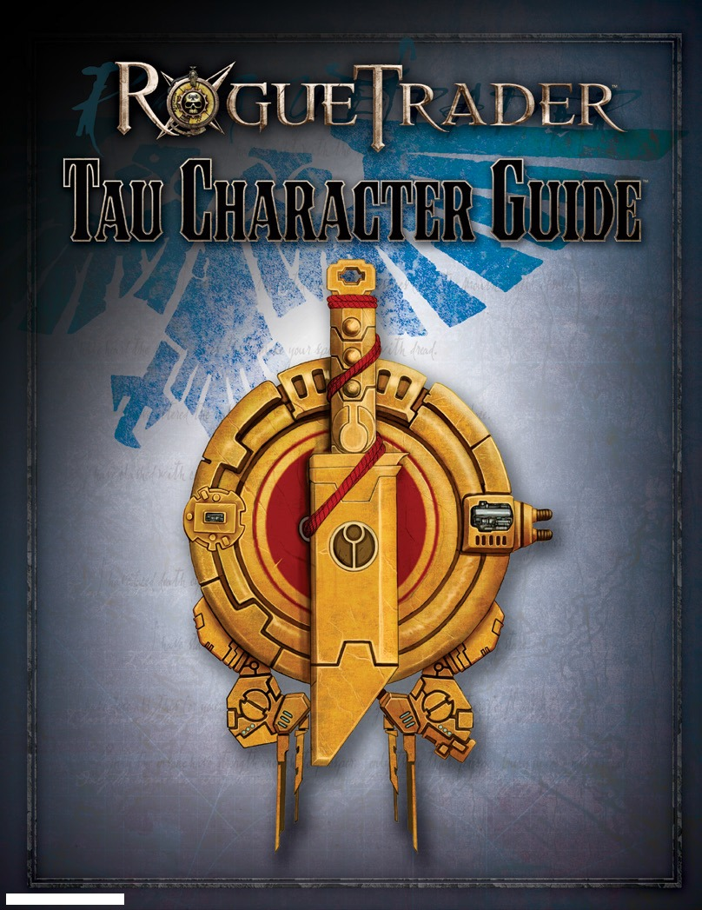
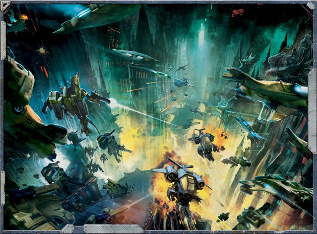
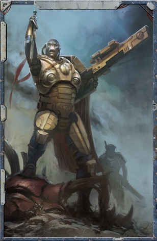

R⑧GUE
w
在科罗努斯扩区的
汉化：即食自
排版：HII(
RADER
cter Guide
的上出善道的战士们
食自走型拉拉肥
11(1jtc0922)

CRE
Max Brooke and Tim Flanders
Blake Bennet,Tim Cox,and Anthony Hicks
Andrew Kenrick with David Johnson and Mark Latham
Chris Gerber
Brian Schomburg
Dayid Griffith
The Games Workshop Design Studio
Andy Christensen
Eric Knight
Deb Freytag and Amanda Greenhart
FANTASY
FLIGHT
GAMES
Games Workshop Limited 2014.Games Workshop,Warhammer 40,0
respective logos,and all associated marks,logos,places,names,creatures,r
units and unit insignia,characters,products and illustrations from the Wa
Bor TM,and/or Games Workshop Ltd 2000-2014,variably registe
under license to Fantasy Flight Publishing,Inc.Fantasy Flight Games
Flight Publishing.All ights ceserved to their espective owers No
transmicted in any form by any means,electronic mechanical,photocopy
Product C
For more information about the Rogu
to rule queries,or just to pass
www.FantasyE
2
REDITS
Corey Konieczka
Michael Hurley
am
Christian T.Petersen
Playtest Coordinator Zach Tewalthomas;
"Unrepentant"Lachan "Raith"Conley with Aaron Wong,
Nicole Gillies,Rhys Fisher,and Jordan Dixon;
"The Librarians"Pim Mauve,Gerlof Woudstra,
Keesian Kleef,Jan-Cees Voogd,and Joris Voogd;"Well
Done My Lord,You Killed Them"Siobhan Robson with
Brad Wallis and Luke Caspers
John French and Graham Nicoll
Jon Gillard
ORS
Andy Jones
Alan Merrett
Fantasy Flight Games
1995 West County Road B2
Roseville,MN 55113
USA
mer 40,000,Warhammer 40,000 Role Play.ROCUE TRADER,the foregoing marks'
eatures,races and race insignia/devices/logos/symbols,vehicles,locations weapons
m the Warhammer 40,000 universe and the RoCuE TRADER game setting are either
y registered in the UK and other countries around the world.This edition published
Games and che Fantasy Flight Games logo are registered trademacks of Fancasy
e No part of this publication may be epoduced storedi a reieval system.
hotoopying.ecodingo otherwise,without the prio permission of the publishers.
duct Code:PRT17
he Rogue Trader line,free downloads,answers
to pass on greetings,visit us online at
asyFlightGames.com
For The Greater Good
Tau
Through Unity,Prosperity for AIl.4
Ta
Body and Soul......
.5
Ta
progress Unopposed5.
Ta
Victory on the Horizon.
Spreading the Greater Good to AIl......6
Tau
Tau Explorers
N
Classified Competence.
Tau Characteristics......9
Tau SkilS.9
Sis
Tau Talents....9
Fire Warrior Career Path............
.12
Tau
AIternate Career Ranks18
Taking an Alternate Career Rank.
18
x
Elite Advances from Missed Career Ranks.
19
Career progression19
X
X
Drone Handler
22
Battlesuit Pilot...
24
X
Tau Armoury
Tau Equipment26
Tau Armour....
27
Tau weapons..8
Tau Drones.9
Tau Battlesuits…
30
Nanocrystalline Armour31
primary Systems3.
Support Systems.…
33
Signature Systems.35
Weapons Systems
37
Tau Battlesuit profiles39
XV25 Stealth Battlesuit39
Xyg Crisis Battlesuit.4
XV9 Hazard Battlesuit....
…40
XV8-05“Enforcer”Crisis Battlesuit..41
XV88Broadside Battlesuit4.
XV104 Riptide。
.42
XV104 Riptide (Continued)
43
3

“我们的道途是一致的，鸠’拉。我将把我的力量交付给你。直到你不再为上上善道服务为止。”――夏斯’欧・博’哈
一台机器的强大取决于它最薄弱的部分，而钛帝国这台机器便是在确保每个齿轮都插入完美位置的基础上变得愈加强大。这个规模虽小但不断壮大的帝国并非建立在古老的传统、对某位神明的崇拜或某种野蛮的战争欲望之上，相反，它从一种抽象概念中汲取力量，其被称为“钛’瓦”，又或叫“上上善道”。这一将团体和社会作为一个整体置于任何个人之前的理想驱动着每一个行动，并促成了那些高速的增长和巨大的成功，使得钛族得以一并将领土和新种族纳入他们所认为的银河系的昭昭天命之中：天下大同，以致力于上上善道。
作为银河版图中一个相对较新的成员，钛星人才刚刚开始在远东星域中刻画他们的帝国。作为一个拥有非凡的共同愿景和无与伦比的技术创新的繁荣物种，钛族人已经从源源不断的他们的家园世界中涌出，在整个银河系的东方边缘为他们自己建造、殖民和征服一个个的立足点。随着钛族人爆炸性地向外扩散，他们的探险队接触到了无数其他物种。无论是通过外交欺诈还是暴力，钛星人几乎无需放慢他们扩张的速度，因为每个新物种都倒在了他们的枪口之下，又或者被帝国的“上上善道”哲学所吸引。
在他们遥远的过去，钛星人曾经是数个分裂敌对的部族，陷入于一场有着毁灭行星之威胁的无休止的战争。以太氏族看似奇迹般的出现，带来了钛'瓦的概念，最终结束了世代的恩怨，将所有的钛星人团结在了一个共同的目标之下。以太并没有将氏族融合到一起，而是选择维持它们的分隔状态，并分配给每个氏族符合其优势的任务。凶猛且身体强壮的平原行者成为了火氏族，化身为这成长中的帝国的战士。那些结实的山谷住民擅长建筑和创新，并最终成为了土氏族。有翼的山地人利用他们卓越的机动性作为信使并最终成为飞行员，并获得了气氏族的名号。而最后一群人，天赋于出色的口头表达能力，使得他们胜任那些商业、官僚和外交上的职位，获得了水氏族的头衔。而以太氏族则一直保持着权威的地位，提供智慧和指导，确保所有人向着共同繁荣之路奋力前进。
而随着钛族人发展出角触及星辰的能力，并在旅行中遇到了与他们远在每一个例子中，水氏成员首先试图通过外交方式将外星人融入钛帝国，给予他们在科技上进行巨大援助的保证并提供他们一个帮助促进上上善道事业的机会。外交官们通常都会取得成功，而在那些不成功的情况下，火氏族的战士们总是会准备好提供他们那通过无休止的训练所磨练出来的专长，以使得谈判有一个令人满意的结果。就这样，钛族人不仅为他们的帝国增添了新的世界，而且还融入了新的种族以补充和增强帝国整体的力量。
该产品为《行商浪人》玩家提供了游玩钛族探索者的所有必要信息和规则。本增刊包含钛帝国的简明历史、扮演火氏族钛星战士的规则，以及为角色配备钛帝国先进技术的军械库。
迄今为止，钛帝国经历了三个快速增长时期，即所谓的天穹扩张，虽然没有一次扩张没有遇到过问题，但总体上每次扩张都取得了成功。钛族人自己在他们的帝国保持着“平等中的第一”的地位，并寻求将上上善道的核心信条灌输给所有的附庸种族。为了整体的利益而付出自己的一切，甚至到字面上的自我牺牲的理念，始终处于所有钛族人头脑中首位，并驱动和定义了他们的行动。这种行为常常让外人感到困惑。但对于钛星人来说，他们拥有一种来自于了解同志们内心动机的隐性认知的舒适感。这是银河系中只有少数种族才能够享受的奢侈品。
钛星人本身在大小和形状上看起来都是类人的，但他们的蓝色皮肤颜色使他们很快就与人类区分开来。他们有相当扁平的脸，大眼睛，除了偶尔出现的战士式辫子外，通常没有头发。它们的两趾足与人类的形态形成了另一个显着的区别。他们的寿命通常比人类的寿命短，尤其是相较于那些能够享有行商浪人及其他类似帝国杰出人物所拥有的延寿术及医疗奢侈品的人来说。尽管如此，仍有少数人成功找到了延长寿命至超出常规水平的方法。
由于严格执行种姓制度的漫长历史，外表可以很容易地告知旁观者特定的钛族人在社会中的角色和地位。例如，火氏族成员包括了最强壮和最高大的钛族人，而气氏族成员则表现出更适合飞行和太空旅行的更高更轻的体格。某些心理特征通常与氏族内的身理共性一起存在，尽管这一现象是生理条件还是社会标准造成的还有待商榷。尽管如此，水氏成员会发现自己天生能够吸引他人并学习语言，而土氏的发明者和建设者则表现出一种天生的对改进和创新的亲和性。此外，钛星人个体通常都具有某些特征使得能够轻易地识别他们的家乡世界，其中主要是他们蓝色皮肤的精确色调，这取决于这个世界与太阳的接近程度。
除了这种身体上的差异，以太氏族似乎也散发出某种自然的存在，能够激发出其他氏族成员的忠诚、服从，并且常常还有希望。这种能力的来源又或是背后的原因从未得到充分解释，而钛族人本身似乎也不太愿意对这个特定主题进行研究。
钛帝国得益于显著的科技进步和众多的战果，这在很大程度上得益于其先进的技术。从历史角度来看，钛星人的生物进化和技术发展速度远超银河系中的其他多数物种，这是一个尚待解析的现象。因此，他们将其技术视为一种可随需求不断优化、更新和改良的工具，与人类或灵族等种族的观念形成鲜明对比。钛族人不受过往做法的制约，对武器、载具等持有十分平常的视角。
钛星人具备的先进技术水平相较于银河系中的绝大多数种族具有明显优势，他们对相关科学原理的掌握亦属上乘。为了充分发挥这一优势，土氏成员不断追求进步，积极研发并部署新型原型。确保火氏族和气氏族在钛族人所面临的变幻莫测的战场上始终保持技术优势。除毁灭性武器和灵活的载具外，钛星人还常常运用高度复杂的人工智能，通常以兵蜂形态呈现。虽然兵蜂通常单独使用或由单个钛星人给予指令的小组使用，但人工智能的精确程度足以支持多组兵蜂协同工作，它们的格式塔智能使它们能够承担复杂任务并实施独立行动。
此类进步虽存在潜在风险，但从本质上讲，原型并不总是如预期般运作。钛族人认为这些风险是可以接受的。例如，大型战斗服的初期研发导致试飞员伤亡惨重，尤其与早期小型化新星反应堆相关的高风险。然而，鉴于最终产品――强大的104“激流”战斗服，这种牺牲被认为具有价值，这一研究成果将在阿格瑞兰星及后续许多世界中对战争局势产生扭转作用。
钛族人天生难以理解人类对技术的不信任与神秘主义。毕竟，无论尖端设备如何先进，皆仅为应用的工具。尽管他们并不排斥在必要时运用外星产品，但出于安全、可靠以及杀伤力的考量，他们始终更偏爱自主研发的武器与配件。
尽管尚处于他们的家园世界，但钛族迅速发展和膨胀的人口开始使他们感到受到限制。于是以太便引导他们的人民走向显而易见的解决方案：浩瀚群星，和其中的其他行星。这就是长达干年的第一次天宫扩张的开始，从邻近的钛'恩星开始，并迅速涵盖了钛星附近的所有星系。这八个星系，也称为家门，获得了相对成功，尽管这次扩张标志着与他们未来那被称之为“兽人”的长期敌人的第一次接触。然而，这同样也标志着与与克鲁特人的首次接触，他们将成为钛星人的亲密盟友和效力于上上善道的同伴。
太空旅行技术的非凡进步预示着第二次天穹扩张的开始，随着土氏工程师开发了出了近光速太空飞行技术。在至高以太安’伟的带领下，这一时期钛星人将十几个新的家门带入了帝国的境内。这个时代也让如今被称为传奇的清汐指挥官展现了他的战术才华，为他的人民带来了无数非凡的胜利。他之后训练了一批最著名的火氏族成员，例如指挥官影阳和臭名昭著的指挥官远见，他的训练和策略将永远影响火氏族的战争学说。
第二次扩张的结束可能标志着帝国历史上最动荡的时期。穿越达摩克利斯湾后，钛族人第一次接触到了人类帝国。他们对帝国空间的温和侵占遭到了人类典型的激烈和军国主义的反应，钛族人由此经历了一场在规模和残酷性上前所未有的的战争。在被迫进行了在天穹扩张的历史上的第一次重大撤退后，火氏族被迫重新考虑其战术策略并适应这个新敌人。由以太安'瓦制定并由指挥官远见执行的计划使钛族人能够迅速夺回他们失去的世界。胜利几乎是完全的，直到遭遇了两个重大挫折：远见突然而无法解释地消失在未来将会被被称为远见飞地的地方，以及巨大的aagh!所带来的兽人部队直冲入钛帝国空间。
充满活力的影阳指挥官迅速填补了远见留下的空白，击退了凶恶的兽人。在胜利和新技术进步的支持下，安'瓦宣布了第三次天穹扩张的开始，其目标比之前所做的任何一次努力都更远更广。凭借对帝国的战术洞察力和最新最好的钛族武器，影阳迅速击破了帝国能够向她派来的每一次防御企图。随着许多前帝国世界如今处于钛星人的控制之下，帝国这台笨重的机器却还没有做出反应，迄今为止，钛星人实在看不出有什么理由能够期待什么不同于他们在过去历次的扩张中所享有的非凡成功之外的东西了。
